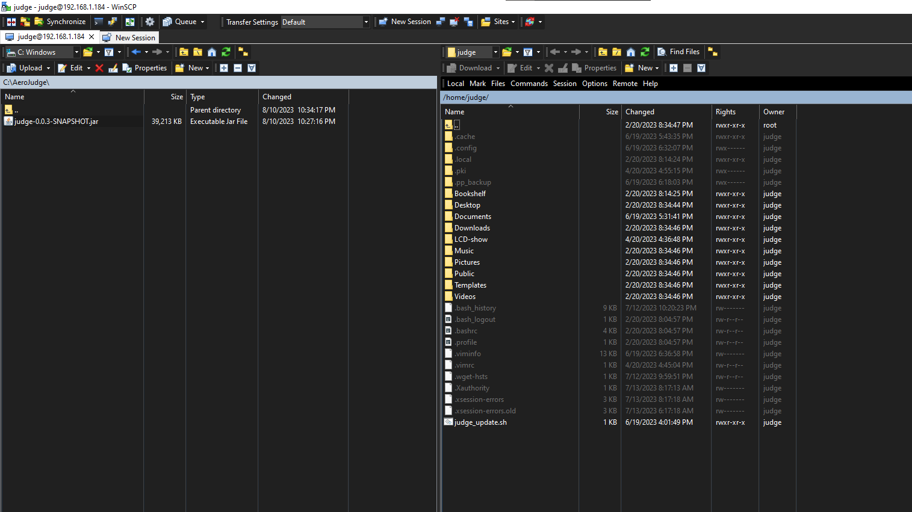
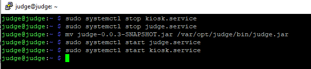

AeroJudge Device Setup
Setup New device
If you have a new device or a new SD card, then you need to download the full device image:
download image here
Use pi imager to write image to SD card
Win32 Disk Imager https://sourceforge.net/projects/win32diskimager
balenaEtcher https://www.balena.io/etcher
Raspberry Pi Imager https://www.raspberrypi.com/software/
Once the pi image is written, a drive letter will be assigned (in Windows)
Continue to Configuring device for a contest
Updating the device
If you have an existing device that needs to be updated:
If the device is connected to WiFi network with internet available:
Login to the device using putty entering the appropriate IP address

Answer Yes if you receive a security alert (only the first time)

At login as prompt enter “judge” and press enter.
- At the password prompt enter the approprate password. Contact the IMAC AeroJudge development team for the current password.
Note
When typing the password no characters will be displayed on the screen. If a mistake is made, press Enter and it will prompt again to enter the correct password.

Run update command:
./judge_update.sh
If the device is not connected to a WiFi network with internet, but you have the ability to obtain (or previously obtained) the latest judge application:
Use WinSCP (or similar FTP application) to transfer the new application file to the device

Answer Yes if you receive a security alert (only the first time)

Navigate to the location with the updated application, click on the file and drag it to the device folder: 
The file should now appear on the device:

Login to the device with Putty (or in WInSCP use menu :menuselection: Commands –> Open Terminal ) and run the following commands in order:
sudo systemctl stop kiosk.service sudo systemctl stop judge.service mv {filename you transferred} /var/opt/judge/bin/judge.jar sudo systemctl start kiosk.service sudo systemctl start judge.service
Note
No response will be seen after the commands are run

Configuring device for a contest
Insert SD card, opening the result drive, and find the file named settings.json.
Open this file in a standard text editor (not a rich editor like MS Word).
Edit the file placing the appropriate values after the colon (:) being careful to preserve all formatting (braces, quotes, commas).
{ "judge_id":1, "line_number":1, "score_host":"192.168.50.100", "score_http_port":80, "language":"en" }
settings.json file parameters:
line_number is a single integer number starting at 1. Each AeroJudge device for a given flight line should have the same number. A different flight line should have the next highest integer number (eg 2) for all devices being used on that line.
judge_id is a single integer number starting at 1. Each AeroJudge device for a given flight line should have a different judge id from 2 (minimum) to the number of judges for that line.
score_host is the network IP address of the computer running the Score software with services running
score_http_port is the port number entered on the Score software services tab
language is the two letter language code (currently only “en” is supported)
Be sure to eject the disk properly (right-click drive letter and choose Eject)
Insert the SD card back into the device and power the device